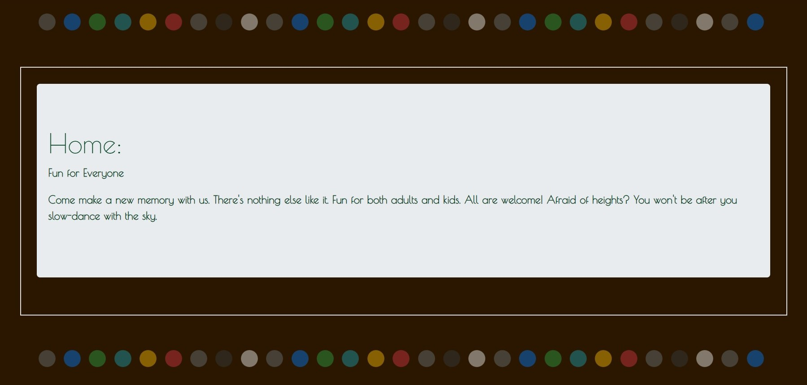

------->The purpose of this project was to utilize the components of Bootstrap, Grids, CSS, HTML, and Media Queries to create a functional website.
------->The information to be placed on the website was given, all you had to do was code the website. This website wasn’t too difficult for me, I had some fun creating it. The most difficult parts to create were the carousel and the navigation bar. Both were difficult to customize and adjust to your liking. For the navbar, I attempted to add links to make the navbar buttons jump to where you want to go on the page. Unfortunately, I wasn’t able to do so. The carousel was hard in the sense of adding pictures. I had some trouble trying to link the images on my local into my website. After several tries, I found out that the issue wasn’t with the code, rather the formatting of the code. Turns out, when you have an image already sourced in your local, all you have to do is write out the file path right after "src=" in the attribute tag. Other than that, I like this project, to an extent, but loved customizing it to my liking.
-.Project Preview.-  -.Github Preview.-